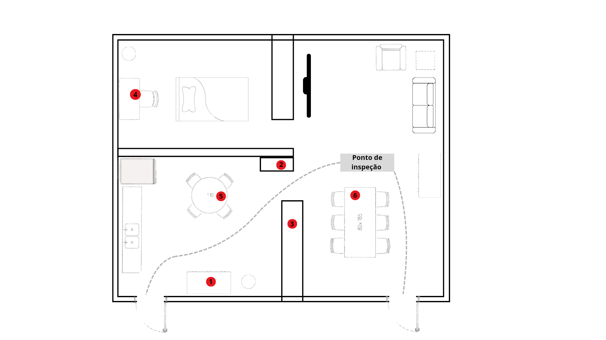
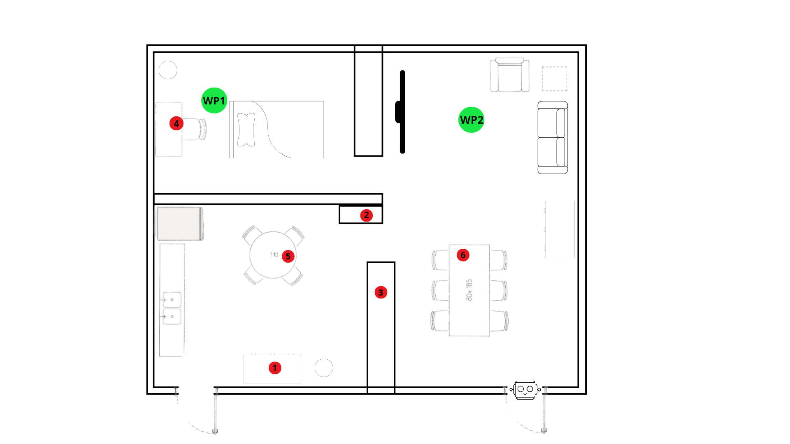
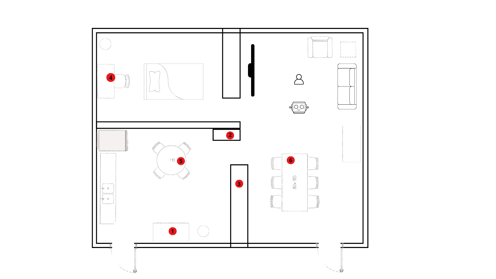
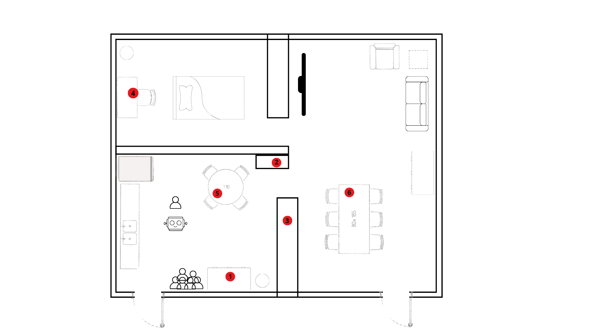
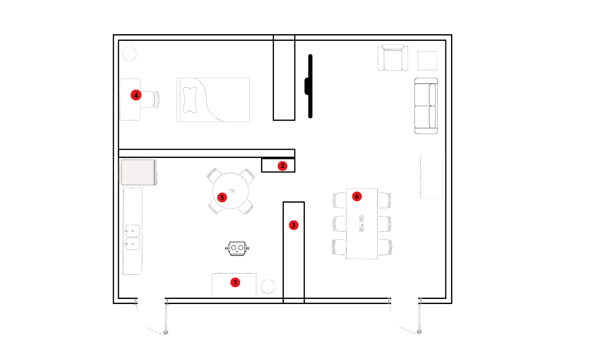
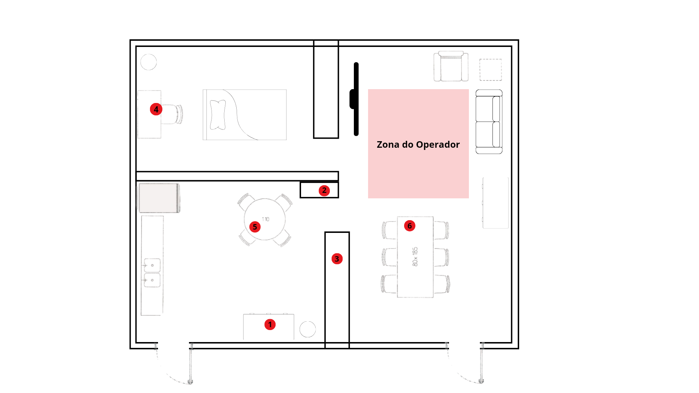
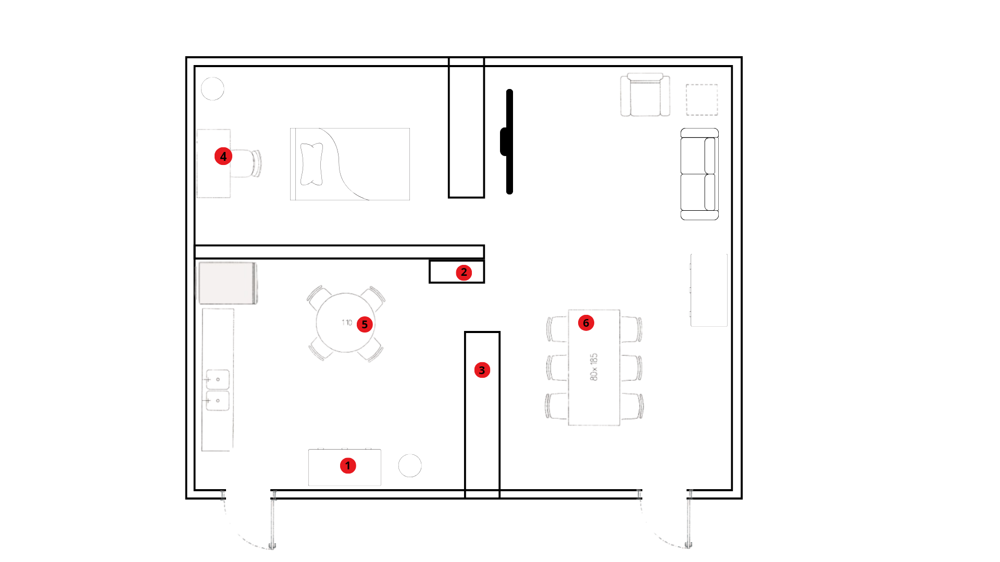
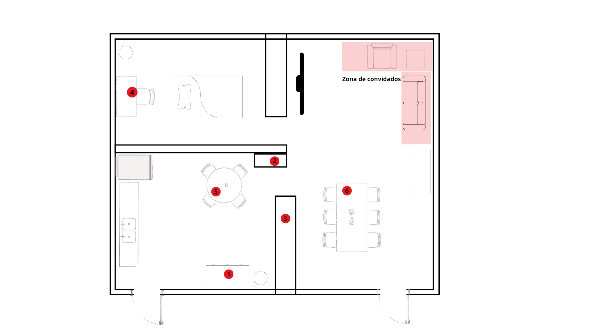
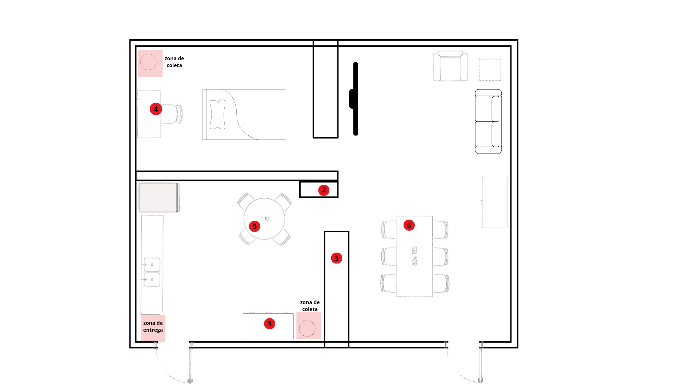

About
- City:
- Date:
Organizers
Chair:
Organizing Committee (OC):
Photos

Call for Participation
RoboCup@Home Brazil Open
, ()
https://cbr.robocup.org.br/ https://olimpo.robocup.org.br/ https://github.com/RoboCupAtHomeLatinAmerica/RuleBook WhatsApp GroupRoboCup is an international scientific initiative with the goal to advance the state of the art of intelligent robots through competitions (RoboCup@Home, RoboCup Soccer, RoboCup Rescue, RoboCup@Work and RoboCup Junior).
The RoboCup@Home Brazil Open competition aims to develop service and assistive robot technology with high relevance for future personal domestic applications. It is the largest international annual competition for autonomous service robots and is part of the RoboCup initiative. A set of benchmark tests is used to evaluate the robots's abilities and performance in a realistic home environment setting. Focus lies on the following domains but is not limited to: Human-Robot-Interaction and Cooperation, Navigation and Mapping in dynamic environments, Computer Vision and Object Recognition under natural light conditions, Object Manipulation, Adaptive Behaviors, Behavior Integration, Ambient Intelligence, Standardization and System Integration.
This page describes the preregistration and qualification procedure for RoboCup@Home 2024.
The qualification procedure consists of the following steps:
All submissions must be made on the Olimpo website
- Pre-registration and submission of TDPs
- Correction and resubmission of TDPs
- Registration and Payment
- Poster submission
Important dates:
- 05/08/2024 - Deadline for pre-registration(submission of TDPs)
- 14/08/2024 - Publication of TDP Results
- 23/08/2024 - Deadline for correction and resubmission of TDPs
- 30/08/2024 - Publication of qualified teams
- 30/09/2024 - Deadline for Early Registration and Payment
- 20/10/2024 - Deadline for Regular Registration and Payment
- 11/10/2024 - Deadline for Late Registration and Payment
- 11/10/2024 - Deadline for Poster submitinon
Instructions for the Qualification Material
All teams must submit a TDP (Team Description Paper) to participate in the competition. The TDP is a scientific paper, detailing information on the technical and scientific approach of the team's research. The TDP should describe the ideas implemented by the team. You can describe the entire system or focus on one or two components – we recommend that innovative and important topics or alternative approaches adopted be included in the TDP, as the same problem and topics may interest other teams. It is very important that the explanations are made in a clear and objective manner, assuming that the readers are familiar with topics related to the category (description, rules, etc.). Focus your text on the important topics of your work. It should explain the technical details of how your approach works so that other researchers can replicate your experiments and results. This way, all researchers can benefit from the experiences presented.
The language for the TDP, its graphics, tables, images, and all additional content must be English. Content in other languages must be translated.
Teams that do not submit a TDP or that have their TDP rejected will not be allowed to participate in the event even if they have paid the registration fee. Registration fees will not be refunded.
You may download a template for the TDP from here.
The TDP needs to include the following topics:
- Group's research focus and interests.
- Innovative technology and scientific contribution.
- Please specify when your research is being used by other teams or research groups.
- Please specify when you are using software from other teams.
- Brief, general description of the system when solving a domestic task (applicability in the real world).
- The impact of your research must be clearly visible.
- Maximum length is 6 pages (including figures and citations).
- Photo of the robot.
- Brief, compact list of the 3rd party robot's software.
- Brief, compact description of the robot's hardware.
- Brief, compact description of all external computing devices, if any.
Copyright note: All TDPs may be made publicly available in the RoboCup@Home Brazil Wiki for further reference. On submitting, teams implicitly grant permission to RoboCup @Home Brazil to copy, distribute, upload, publish, and use the manuscript to promote the event and the league at convenience.
Qualification and evaluation criteria:
- clarity
- completeness
- scientific contributions
- re-usability by the league
- applicability in real world
- Performance in local tournaments and previous competitions
- Novelty of approach (what you do is new for @Home)
- Focus on the scientific contribution and avoid brief descriptions of the overall system.
.
With kind regards, and looking forward to see your team in ,
The RoboCup@Home Brazil Organizing Committee.
Score
Presentation
| Team Name | Poster |
|---|---|
| Bahia RT | 39.56 |
| Warthog Robotics @Home | 52.46 |
| AdaRobotics | 66.56 |
| UTBots | 53.26 |
| PMEC@HOME | 56.23 |
| RoboFEI | 71.53 |
| FBOT@Home | 87.26 |
Stage 1
| Team Name | Speech | Person | Naviagation | Manipulation |
|---|---|---|---|---|
| Bahia RT | 0 | 0 | - | - |
| Warthog Robotics @Home | 300 | 0 | - | - |
| AdaRobotics | 600 | 1040 | - | - |
| UTBots | 600 | 0 | - | - |
| PMEC@HOME | 0 | 0 | - | - |
| RoboFEI | 100 | 1100 | - | - |
| FBOT@Home | 600 | 1100 | - | - |
Stage 2
| Team Name | Receptionist | Teke Out The Garbage | Carry My Luggage | Clean Up |
|---|---|---|---|---|
| Bahia RT | - | - | - | - |
| Warthog Robotics @Home | - | - | - | - |
| AdaRobotics | - | - | - | - |
| UTBots | - | - | - | - |
| PMEC@HOME | - | - | - | - |
| RoboFEI | - | - | - | - |
| FBOT@Home | - | - | - | - |
Final
| Team Name | Final |
|---|---|
| Team 1 | - |
| Team 2 | - |
| team 3 | - |
Teams
| Team Name | Capitain | Institution | TDP | Poster | Robot Name | Robot Photo |
|---|---|---|---|---|---|---|
| Bahia RT | Gabrielle Carvalho | UNEB | TDP | Poster | BILL Estranho | Photo |
| Warthog Robotics @Home | Rhayna Casado | Universidade de São Paulo - Campus São Carlos | TDP | Poster | Antares | Photo |
| AdaRobotics | Leonardo Contador Neves | N/C | TDP | Poster | Athena | Photo |
| UTBots | Gustavo Fardo Armênio | UTFPR | TDP | Poster | HESTIA | Photo |
| PMEC@HOME | José Rafael Rebêlo Teles | Universidade Federal de Goiás | TDP | Poster | Miss Piggy | Photo |
| RoboFEI | Gabriela Bassegio | Centro Universitario FEI | TDP | Poster | HERA | Photo |
| FBOT@Home | Jardel dos Santos Dyonisio | Universidade Federal do Rio Grande (FURG) | TDP | Poster | BORIS | Photo |
{kind=link}
{kind=link}
{kind=link}
{kind=link}
{kind=link}
{kind=link}
{kind=link}
Tasks Info
Arena
|  Inspection |
||||
|  Navigation and Follow Me |
 Speech Recognition & Audio Detection |
 Personal Recognition |
 Manipulation and Object Recognition |
|
|  Carry My Luggage |
 Clean Up |
 Receptionist |
 Take Out the Garbage |
| Drinks | Cleaning supplies | Pantry items | Fruits | Snacks |
|---|---|---|---|---|
 Coke |
 Cloth |
 ToothPick |
 Sicilian_Lemon |
 fillet |
 Fanta |
 Soap |
 Cappuccino |
 Apple |
 Onion |
 Kuat |
 SteelWool |
 Gelatin |
 Kiwi |
 Pepperoni |
 Pithula |
 MilkCream |
 Lemon |
 Wafer |
|
 Papaya |
 TomatoSauce |
|||
 Banana |
People Names
| Male | Female | |
| 1 | James | Mary |
| 2 | Michael | Patricia |
| 3 | Robert | Jennifer |
| 4 | John | Linda |
| 5 | David | Elizabeth |
| 6 | William | Barbara |
| 7 | Richard | Susan |
| 8 | Joseph | Jessica |
| 9 | Thomas | Karen |
| 10 | Christopher | Sarah |